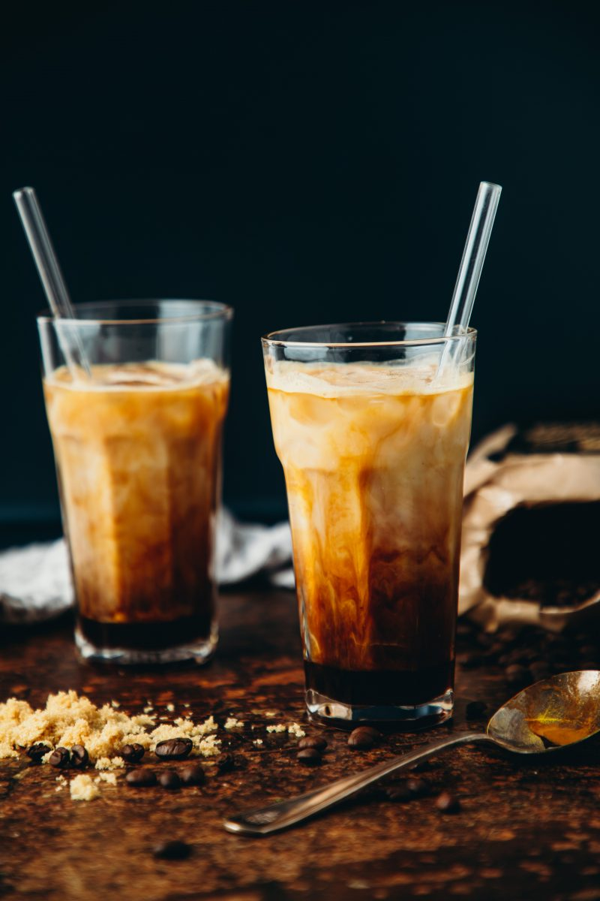

Brown Sugar Oatmilk Shaken Espresso Latte

By ItsLivB
Homemade brown sugar syrup with cinnamon and vanilla, espresso shaken with ice and its all topped with creamy oat milk.
INGREDIENTS
Brown Sugar Syrup
- 4 tbsp lightly packed brown sugar
- 1/2 tsp ground cinnamon
- 6 tbsp water
- 1 tsp vanilla extract
Lattes
- 2 double shots of espresso
- A mason jar or cocktail shaker with a few icecubes
- 2 glasses filled halfway with ice
- Oatmilk (as much as you need to top up the cup)
STEPS
- In a small frying pan or pot on the stove, add the syrup ingredients and heat on medium-high, whisking to combine. Once it starts simmering, lower the heat to medium-low and simmer about 3-5 minutes, stirring frequently, until sugar has completely dissolved and syrup has thickened just slightly. Remove from the heat and set aside.
- Brew two shots of espresso or about 1/2 cup of very strong coffee. Add to the mason jar with 3 tbsp of syrup and a few ice cubes and shake vigorously for about 1-2 minutes.
- Add some more ice to each glass. Divide the espresso mixture between the glasses. Add oat milk to top it up. Stir and enjoy!
Main Page